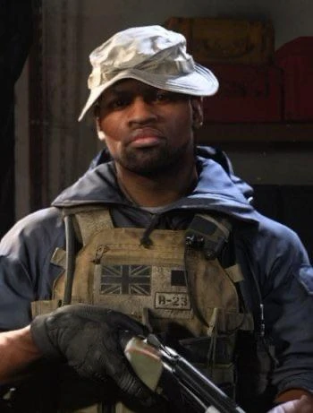

JACOB MICAH THORNE

Jacob Thorne nació el 1 de mayo de 1988. Se unió a la Fuerza Aérea Royal a los 18 años. Luego ingresó y aprobó la selección del SAS a los 23 años, honrando la tradición familiar ya que su padre Stephen Thorne era un comandante en el SAS. "Conocido como "Unión Jack" (En español: Bandera de Reino Unido)" para sus compañeros.
Servido con distinción bajo el Capitán Price durante tres años hasta la transferencia por desacuerdos éticos". Eligió la pista del oficial, alcanzó el rango de teniente. Seleccionado a mano por SAS para la Coalición".